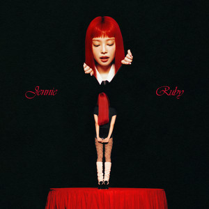

INTEGRANTES
BLACKPINK / SOLO WORLD
Jennie
Sin límites. Sin etiquetas.
JENNIE / BLACKPINK

SU MÚSICA / EN SOLITARIO
Ruby
Todas las facetas de Jennie, en su propia voz.
Reproducir Ruby

MÁS ALLÁ DEL ESCENARIO
Esencia
Jennie.
Rap, voz y una presencia que se reconoce al instante. Jennie lleva su identidad a cada escenario y abrió su camino individual con «SOLO».
- Nombre
- Jennie Kim
- Nombre artístico
- Jennie
- Grupo
- BLACKPINK